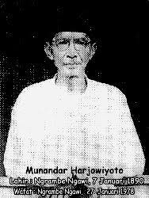

Eyang Moenandar Harjiwiyoto lahir di Ngrambe, Ngawi pada tanggal 7 januari 1980, Mulai masuk di pahuron setia hati tahun 1920 dan pada tahun itu juga di kecer oleh ki Ngabehu Suro Diwiryo (Eyang Suro) sebagai saudara/Kadang SH. Ki munandar Harjowiyoto merupakan seorang Mubaligh dan kental akan agama. oleh karena itu dia menjadi murid kesayangan Eyang Suro menjadikannya dewan kerohanian setelah dikecer menjadi trap 3 dari trap 1 tanpa melalui trap 2. Eyang Moenandar Harjowiyoto ini kental disebut dengan Laskar Moen Wesi (Welas Asih) di karenakan kpribadiannya yang mulia mempunyai rasa cinta kasih dan tidak membedakan sesama manusia.

1. dalam perjalanan awal PSH 1932 dipimpin langsung oleh Bapak Moenandar Hardjowijoto (1932-1934).
2. Kemudian pada tahun (1934-1938) Ketua umun dipegang oleh Bapak Mariyun Sudirohardji dan Bapak Moenandar Hardjowijoto sebagai
ketua untuk kerohanian atau ilmu kebatinan.
3. pada tahun (1938-1962) Keyua umum di pegang oleh bapak Alip Purwowarso. sementara untuk ketua kerohanian atau ilmu kebatinan
masih tetap di pegang oleh Bapak Moenandar Hardjowijoto.
4. Selanjutnya pada tahun (1962-1978) Ketua umum dipegang kembali oleh Bapak Moenandar Hardjowijoto. Dimana pada Periode inilah
(tahun 1972) nama SHO diganti dengan Persaudaraan Setia Hati (PSH) yang dipakai sampai Sekarang.
5. Selanjutnya setelah bapak Moenandar Hardjowijoto meninggal dunia beliau digantikan oleh bapak GPH Gondhokusumo (1978-1985).
6.Periode Berikutnya (1985-2000) Ketua umumnya adalah Bapak R.Mashadi Sastrohardipraniti.
7. Kemudian digantikan oleh Bapak Harsoyo (2000-2005) Hasil dari Rapat MUNAS di Yogyakarta.
8. Kemudian hasil MUNAS di Wonosobo untuk periode 2005-2010 ketua umum adalah bapak Gambiro Gunawan.
9. dan pada tahun 2010 bertempat di Temanggung Bapak Trinowo Harsono menjabat sebagai ketua umum Persaudaraan Setia Hati untuk Periode
2010-2015.
1.Hitam
Sabuk awal yang dipakai ini sabuk berwarna hitam tapi tidak begitu mudah untuk mendapatkan sabuk hitam ini. karena harus menjalani
tes mental dan tes fisik terlebih dahulu. setelah semua dianggap mampu atau pantas oleh guru ata kadhang atau warga PSH maka akan
diberikan sabuk hitam. dan sabuk ini juga memiliki arti yaitu kekal.
2.Merah
Sabuk kedua yang dipakai atau yang di perjuangkan oleh siswa yaitu sabuk berwarna merah. setiap naik tingkat pasti ada tes mental
dan tes fisik . sabuk merah ini memiliki arti berani. ini diberikan kepada kandidat atau siswa supaya bisa menjadi pelajaran dalam
menjalani kehidupan majulah atau beranilah jika benar dan takut atau minta maaf jika salah.
3. Kuning
Sabuk ketiga yang dipakai atau yang di perjuangkan oleh siswa yaitu sabuk berwarna Kuning. setiap naik tingkat pasti ada tes mental
dan tes fisik . Sabuk Kuning ini memiliki arti untuk mewawas diri atau waspada terhadap diri. ini diberikan untuk mendidik karakter
dari siswa atau kandidat supaya bisa lebih mewawas diri bisa berfikir dewasa.
4. Mori
sabuk terakhir yaitu mori dengan ukurannya setinggi orangnya dan tangannya. kalau dalam bahasa jawa yaitu sak dedeg sak pengawe
yaitu dari ujung kaki sampai tangan yang diangkat keatas. untuk mendapatkan sabuk ini maka siswa harus disyahkan dulu oleh sesepuh
dari PSH biasanya disyahkan di acara yang bernama keceran. sabuk mori ini diberikan bertujuan untuk selalu ingat akan kematian. maka
jangan sombong jadi manusia kelak kamu akan di bungkus oleh kain yang kamu pakai.